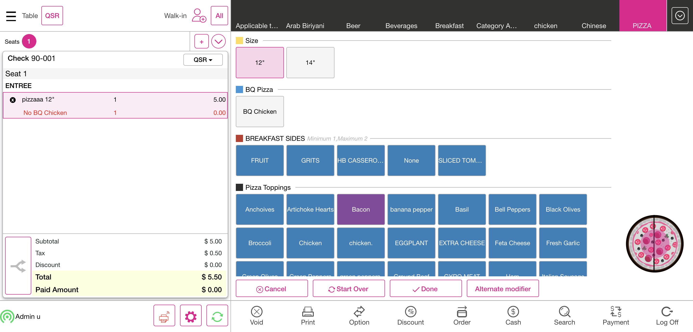

-
Conversational and Serving Size Feature
7:41:02 pm / 00:05:29:564 Fail
Conversational and Serving Size Feature
01.10.2024 7:41:02 pm 01.10.2024 7:46:32 pm 00:05:29:564 · #test-id=1FailVerify when user enable the conversational option in category level it gets reflected in IPADFailVerify when user enable the conversational option in category level it gets reflected in IPADGiven I'm logged inAnd I closed the order type windowAnd I select Pizza as CategoryAnd I select menu item as "Pizza Romano"Then I should see the serving size screenAnd I click Void button on order management screenThen I should see All orders are voidedAnd I click Done button on the PopupAnd I select Breakfast as CategoryAnd I select menu item as "sappthi"Then I should see the serving size screenAnd I select Breakfast as CategoryAnd I select Briyani as SubCategoryAnd I select menu item as "Chicken Briyani"Then I should see the serving size screenAnd I click Void button on order management screenThen I should see All orders are voidedAnd I click Done button on the PopupAnd I select FOOD as categoryAnd I select menu item as "Pizza Romano 12inch"Then I should see the serving size cellThen I should see the serving size screenAnd I click Mandatory Modifier in conversational screenAnd I click Void button on order management screenThen I should see All orders are voidedAnd I click Done button on the PopupAnd I select Breakfast as CategoryAnd I select Briyani as SubCategoryAnd I select menu item as "Chicken Briyani"Then I should see the serving size cellThen I should see the serving size screenAnd I get the serving sizeAnd I click Void button on order management screenThen I should see All orders are voidedAnd I click Done button on the PopupAnd I select Pizza as CategoryAnd I select menu item as "Pizza Rucola"Then I should see the serving size cellAnd I click Void button on order management screenThen I should see All orders are voidedAnd I click Done button on the PopupAnd I select Pizza as CategoryAnd I select menu item as "Pizza Rucola"Then I should see the serving size cellThen I should see cancel button is enableThen I should see start over button is enableThen I should see done button is enableAnd I click Void button on order management screenThen I should see All orders are voidedAnd I click Done button on the PopupAnd I select Pizza as CategoryAnd I select menu item as "pizzaaa"Then I should see include modifier as "BQ Chicken" added with menu itemThen I should see the serving size cellThen I should see include modifier as "BQ Chicken" in conversational modifier screenAnd I click Mandatory Modifier in conversational screenAnd I click Void button on order management screenThen I should see All orders are voidedAnd I click Done button on the PopupAnd I select Pizza as CategoryAnd I select menu item as "pizzaaa"Then I should see include modifier as "BQ Chicken" added with menu itemThen I should see the serving size cellThen I should see include modifier as "BQ Chicken" in conversational modifier screenAnd I click start over button in coversational modifier screenThen I should not see include modifier added with menu itemAnd I click Mandatory Modifier in conversational screenAnd I click Void button on order management screenThen I should see All orders are voidedAnd I click Done button on the PopupAnd I select Pizza as CategoryAnd I select menu item as "pizzaaa"Then I should see include modifier as "BQ Chicken" added with menu itemThen I should see the serving size cellThen I should see include modifier as "BQ Chicken" in conversational modifier screenAnd I click include modifier in conversational screenThen I should see include modifier as "No BQ Chicken" added with menu itemAnd I click Mandatory Modifier in conversational screenAnd I click Void button on order management screenThen I should see All orders are voidedAnd I click Done button on the PopupAnd I select Pizza as CategoryAnd I select menu item as "pizzaaa"Then I should see include modifier as "BQ Chicken" added with menu itemThen I should see the serving size cellThen I should see the serving size screenAnd I click include modifier in conversational screenThen I should see include modifier as "No BQ Chicken" added with menu itemAnd I click alternate modifier button in conversational modifier screenThen I should see alternate modifier screenAnd I click modifier from alternate modifier screenAnd I click ok button in alternate modifier screenThen I should see include modifier as "With Cheese" in conversational modifier screenThen I should see include modifier as "With Cheese" added with menu itemAnd I click Mandatory Modifier in conversational screenAnd I click Void button on order management screenThen I should see All orders are voidedAnd I click Done button on the PopupAnd I select Pizza as CategoryAnd I select menu item as "pizzaaa"Then I should see include modifier as "BQ Chicken" added with menu itemThen I should see the serving size cellThen I should see the serving size screenAnd I click include modifier in conversational screenThen I should see include modifier as "No BQ Chicken" added with menu itemAnd I click alternate modifier button in conversational modifier screenThen I should see alternate modifier screenAnd I click modifier from alternate modifier screenAnd I click ok button in alternate modifier screenThen I should see include modifier as "With Cheese" in conversational modifier screenThen I should see include modifier as "With Cheese" added with menu itemAnd I click include modifier in conversational screenAnd I click alternate modifier button in conversational modifier screenThen I should see alternate modifier screenAnd I click Revert button in alternate modifier screenThen I should see include modifier as "BQ Chicken" in conversational modifier screenThen I should see include modifier as "No BQ Chicken" added with menu itemAnd I click Mandatory Modifier in conversational screenAnd I click Void button on order management screenThen I should see All orders are voidedAnd I click Done button on the PopupAnd I select Pizza as CategoryAnd I select menu item as "pizzaaa"Then I should see include modifier as "BQ Chicken" added with menu itemThen I should see the serving size cellThen I should see include modifier as "BQ Chicken" in conversational modifier screenThen I should see include modifier as "BQ Chicken" added with menu itemAnd I click include modifier in conversational screenStep skippedAnd I click prefix modifierStep skippedThen I should see include modifier as "Extra BQ Chicken" added with menu itemStep skippedAnd I click Mandatory Modifier in conversational screenStep skippedAnd I click Void button on order management screenStep skippedThen I should see All orders are voidedStep skippedAnd I click Done button on the PopupStep skippedAnd I select Pizza as CategoryStep skippedAnd I select menu item as "pizzaaa"Step skippedThen I should see include modifier as "BQ Chicken" added with menu itemStep skippedThen I should see include modifier as "BQ Chicken" in conversational modifier screenStep skippedAnd I click Mandatory Modifier in conversational screenStep skippedThen I should see Mandatory Modifier in conversational screenStep skippedAnd I click Void button on order management screenStep skippedThen I should see All orders are voidedStep skippedAnd I click Done button on the PopupStep skippedAnd I select Pizza as CategoryStep skippedAnd I select menu item as "pizzaaa"Step skippedThen I should see include modifier as "BQ Chicken" added with menu itemStep skippedThen I should see include modifier as "BQ Chicken" in conversational modifier screenStep skippedThen I should see Mandatory Modifier in conversational screen with count of maximum and minimumStep skippedAnd I click Mandatory Modifier in conversational screenStep skippedAnd I click Void button on order management screenStep skippedThen I should see All orders are voidedStep skippedAnd I click Done button on the PopupStep skippedAnd I select FOOD as categoryStep skippedAnd I select menu item as "Pizza Romano 12inch"Step skippedThen I should see include modifier as "1/2 Bbq Chicken" added with menu itemStep skippedThen I should see include modifier as "1/2 Bbq Chicken" in conversational modifier screenStep skippedThen I should see Mandatory Modifier in conversational screen with count of maximum and minimumStep skippedAnd I click Done to get backStep skippedThen I should see you need to pick atleast 1 modifiers from this group popupStep skippedAnd I click Done button on the Popup1Step skippedAnd I click Mandatory Modifier in conversational screenStep skippedAnd I click Void button on order management screenStep skippedThen I should see All orders are voidedStep skippedAnd I click Done button on the PopupStep skippedAnd I click log off button in order screenStep skippedcom.qa.stepdef.Hooks.quit(io.cucumber.java.Scenario)screenshot
-
org.junit.ComparisonFailure
1 tests
org.junit.ComparisonFailure
1 failedStatus Timestamp TestName Fail 19:46:31 pm Then I should see include modifier as "BQ Chicken" added with menu item Conversational and Serving Size Feature.Verify when user enable the conversational option in category level it gets reflected in IPAD.Then I should see include modifier as "BQ Chicken" added with menu item
-
@Conver
1 tests
@Conver
1 failedStatus Timestamp TestName Fail 19:41:02 pm Verify when user enable the conversational option in category level it gets reflected in IPAD Conversational and Serving Size Feature.Verify when user enable the conversational option in category level it gets reflected in IPAD
Started
Jan 10, 2024 07:41:01 pm
Ended
Jan 10, 2024 07:46:32 pm
Features Passed
0
Features Failed
1
Features
Scenarios
Steps
Timeline
Tags
| Name | Passed | Failed | Skipped | Others | Passed % |
|---|---|---|---|---|---|
| @Conver | 0 | 1 | 0 | 0 | 0% |